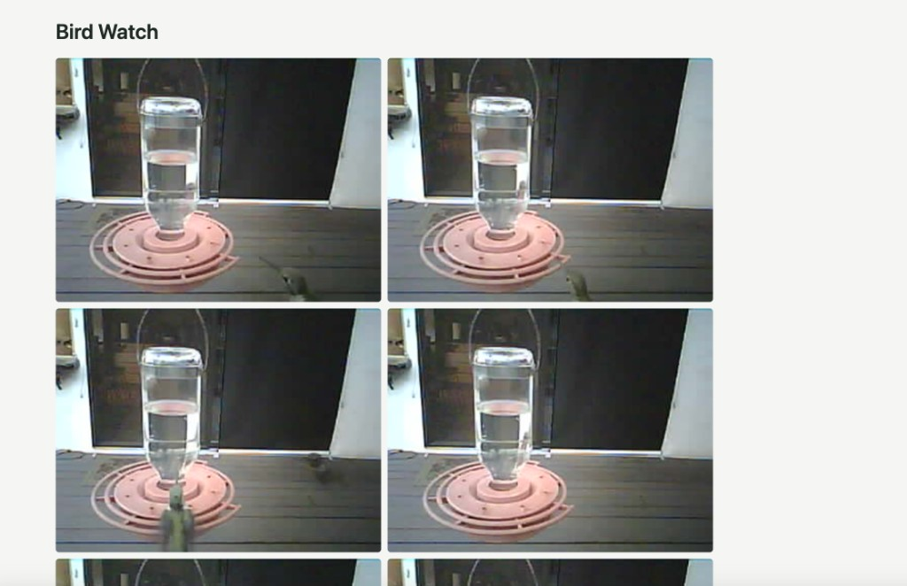
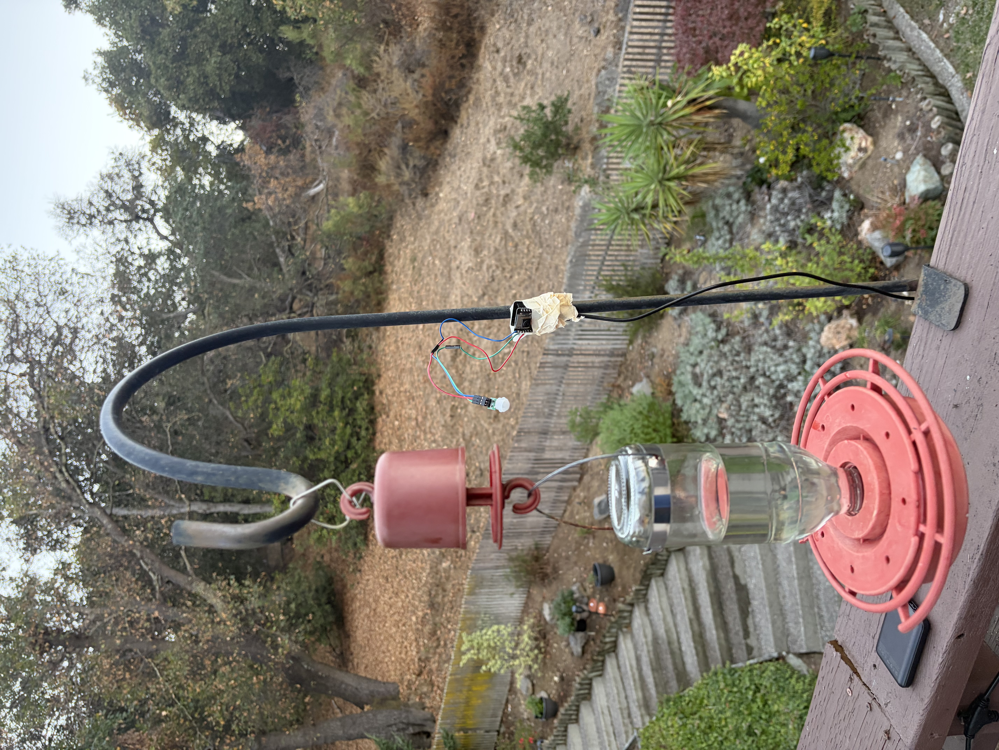
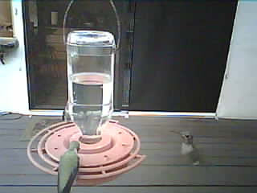
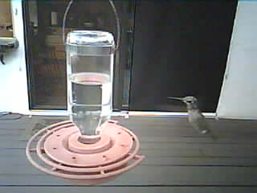
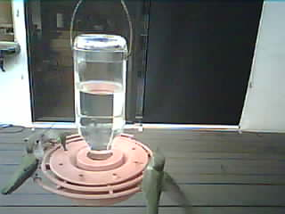

Currently building shopping Chrome extension to help
young women (or perhaps just me) pause before making a purchase.
I'm building it with React.js and GitHub Copilot. Shoppers can
choose to purchase an item or ponder over it. Items on the pondering
list are saved for later and monitored for sales.
Smart Bird Feeder Camera
Built a bird feeder camera for my mom, who is a big
bird enthusiast! The system uses an ESP32-CAM and a PIR motion
sensor to detect birds. When a bird is detected, photos are
automatically uploaded to a Flask backend and displayed on a web
app for viewing.





Smart Bike Safety Helmet System for Kids
My lab partner and I built a two-device IoT system to improve
child safety using embedded sensors and wireless communication.
Helmet Device
GPS tracking for real-time location monitoring
Accelerometer (IMU) for fall and crash detection
Adaptive LED lighting based on ambient light conditions